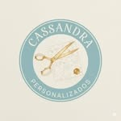
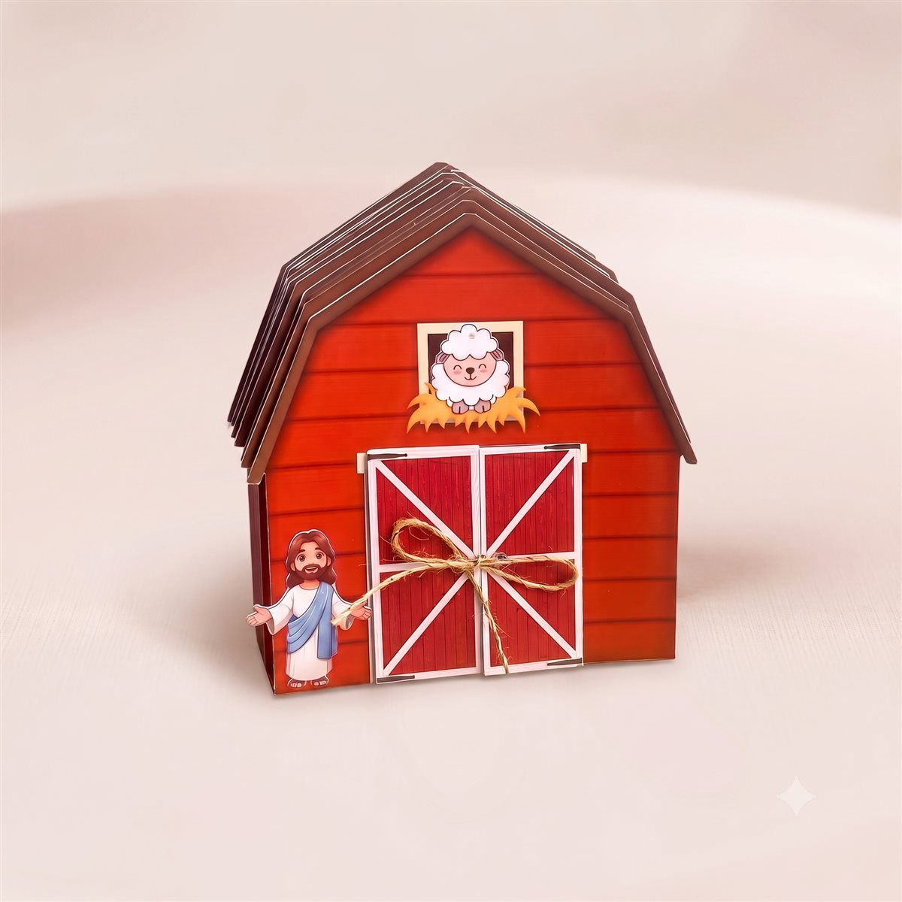
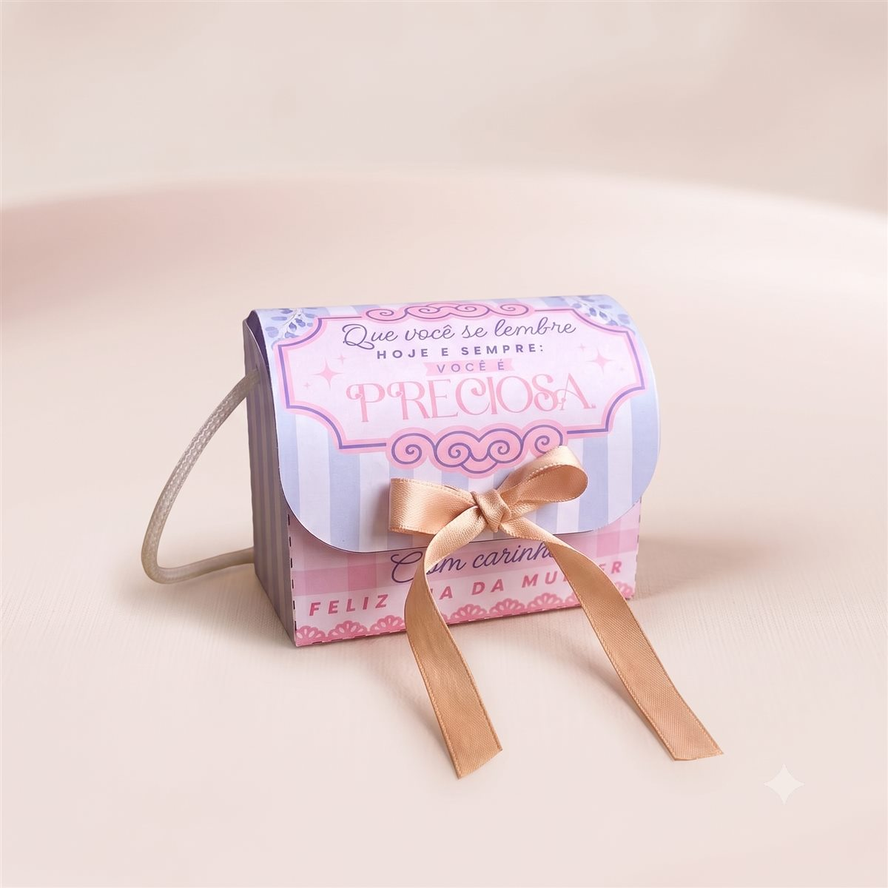
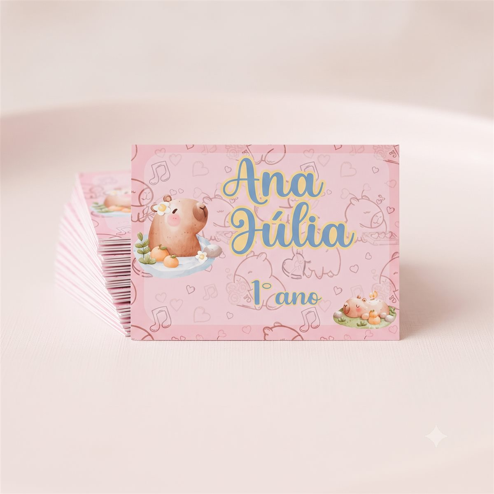
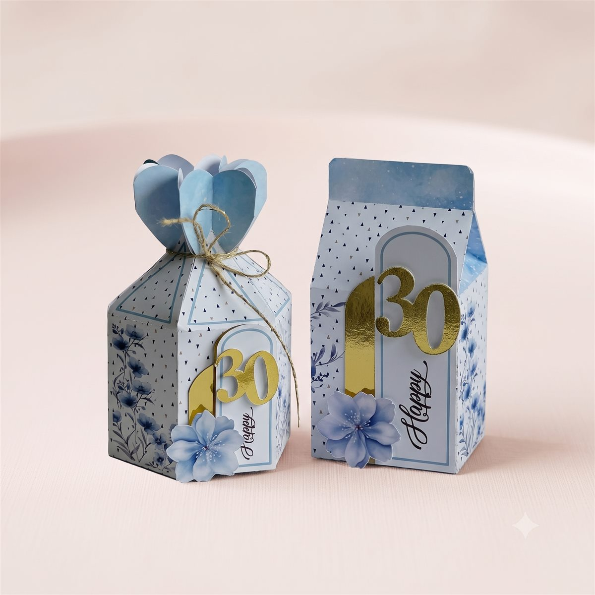
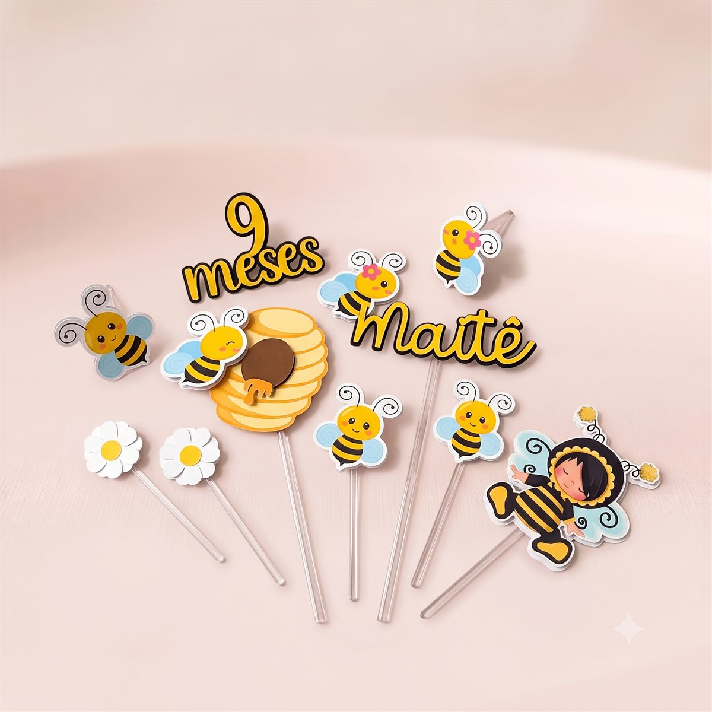
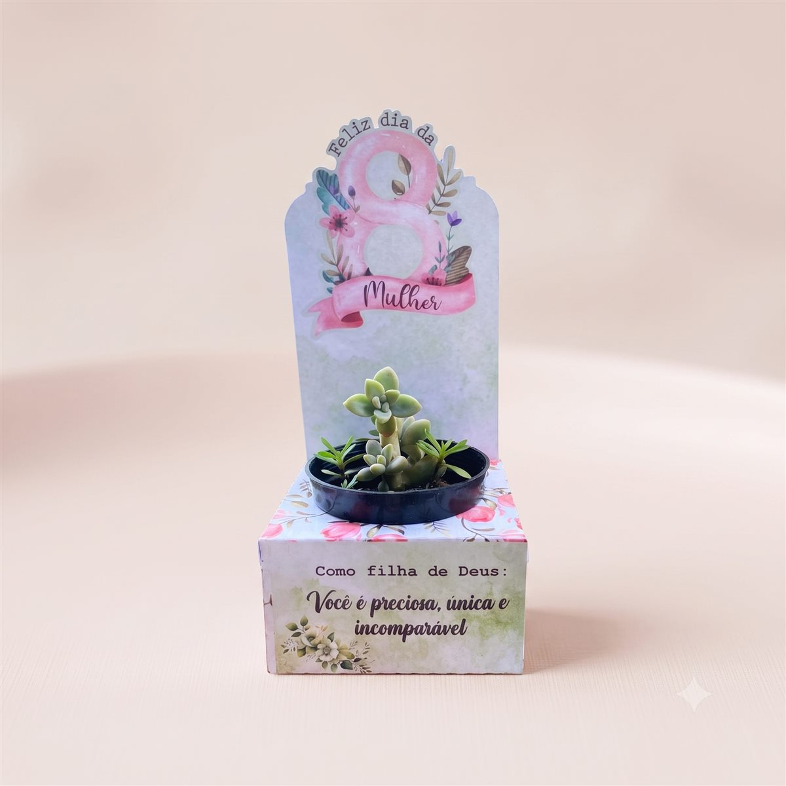

Clareza
Organizar serviços, galeria e processo de pedido de forma direta, sem deixar a página fria ou genérica.

Landing page institucionalCassandra Personalizados
Projeto de landing page responsiva para apresentar produtos personalizados, aproximar a marca do público e transformar visitas em pedidos pelo WhatsApp.
Contexto
O case combina estética delicada, narrativa de marca e pontos claros de conversão para apresentar uma landing page completa.
Organizar serviços, galeria e processo de pedido de forma direta, sem deixar a página fria ou genérica.
Usar tons suaves, imagens reais e microinterações para reforçar o universo delicado da papelaria personalizada.
Guiar o visitante até o WhatsApp com mensagens prontas e um formulário simples para orçamento.
Visual System
Azul delicado, creme artesanal e detalhes dourados para um resultado sofisticado e acolhedor.
Contraste entre serifas elegantes nos títulos e uma fonte limpa para leitura rápida nos blocos funcionais.
A logo aparece como assinatura visual sem competir com as fotos dos produtos.
Primeira dobra
Papelaria | Personalizados
Responsivo
No mobile, o layout preserva a força da foto sem esconder a mensagem principal. A experiência mantém ritmo visual em telas pequenas e grandes.
Galeria
As fotos substituíram ilustrações abstratas e receberam legendas integradas por degradê, preservando a leitura sem cobrir os produtos.

Convites
Caixinhas
Tags
Lembrancinhas
Toppers
Datas especiaisContato
Os botões levam diretamente ao WhatsApp da Cassandra, e o formulário monta uma mensagem automática com nome, telefone, tipo de personalizado, data e observações.
Resultado